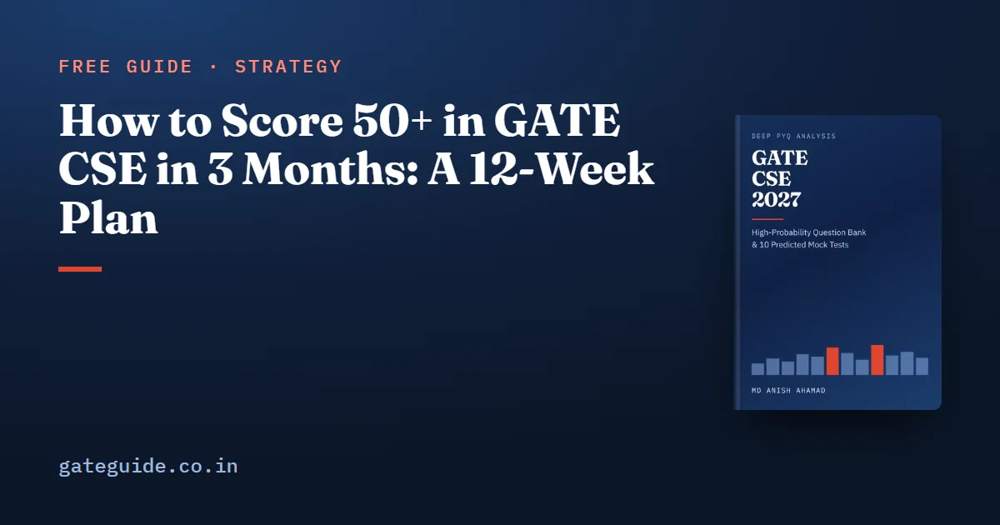

How to Score 50+ in GATE CSE in 3 Months: A 12-Week Plan

To score 50 or more in GATE CSE in 3 months, give every subject its core concepts, collect roughly half of the marks each one usually offers, and take General Aptitude close to full. That is a marks budget, not a syllabus, and a 12-week plan built around it is realistic for someone who can study 35–40 hours a week. For a paper on 6 or 7 February 2027, the twelve weeks start on Monday 16 November 2026.
In this guide
Fifty is the target this plan aims at, not a promised score. Papers change in difficulty, and so does what a given mark is worth.
Key takeaways
- Plan by marks. General Aptitude gives 12 of your 50; the other 38 or so come from a share of every technical subject.
- Weeks 1–7 build the core concepts, subject by subject, with a marks target for each block.
- Weeks 8–10 are topic-wise previous year questions and mocks. Weeks 11–12 are revision only.
- Six full mocks, each followed by a written analysis the next day.
- Never drop a subject to catch up. Drop second-tier topics instead.
The marks budget behind the plan
The CS paper has 65 questions for 100 marks: General Aptitude 15, Engineering Mathematics about 13 and the core subjects about 72. Wrong MCQs cost or of a mark; MSQ and NAT carry no negative marking. Confirm the pattern at gate2027.iitm.ac.in.
The subject averages below are the book's 2018–2026 figures, compiled from analyst reports and approximate. The target shares are my judgement: higher for formula-stable subjects, lower for the ones analysts rate hardest.
| Subject | Average marks, 2018–2026 | Target marks |
|---|---|---|
| General Aptitude | 15 (fixed) | 12 |
| Engineering Mathematics | 13 (official) | 6 |
| Programming and DS | 9.7 | 6 |
| COA | 9.2 | 5 |
| Operating System | 8.3 | 5 |
| Algorithms | 8.1 | 4 |
| Theory of Computation | 8.1 | 4 |
| Computer Networks | 8.0 | 4 |
| Databases | 7.2 | 4 |
| Compiler Design | 5.4 | 3 |
| Digital Logic | 5.1 | 3 |
| Total | about 97 | 56 |
Take off about 3 marks for negative marking (three wrong 1-mark and three wrong 2-mark MCQs cost ) and the plan lands near 53. The spare marks cover a paper where one subject comes in light, which happens: PDS fell to about 6 marks in 2021.
In the book's language, each target is that subject's Priority A concepts, the ones tested in almost every paper, plus one or two Priority B forms where the target is above half. Priority A carries about 55–60 % of the marks by the book's analysis.
The 12-week plan
| Week | Dates | Main work | Target built | Checkpoint |
|---|---|---|---|---|
| 1 | 16–22 Nov | Engineering Mathematics: probability, eigenvalues, graph counting, logic; then counting and relations | Maths 6 | GA 20 minutes daily from day one |
| 2 | 23–29 Nov | Programming and DS: C tracing, recursion, BST, heaps; Digital Logic: K-maps, 2's complement, IEEE-754 | PDS 6, DL 3 | 15 timed C traces |
| 3 | 30 Nov–6 Dec | Algorithms: complexity, recurrences, Dijkstra, MST, DFS, DP | Algorithms 4 | Graph runs on 6–8 vertex instances |
| 4 | 7–13 Dec | Operating System: scheduling, synchronisation, paging, page replacement; then TLB access time and Banker's | OS 5 | Mock 1 on Sun 13 Dec |
| 5 | 14–20 Dec | COA: cache fields, AMAT, pipelining; Compiler Design: SDT, LR conflicts, LL(1) | COA 5, CD 3 | Analyse Mock 1 |
| 6 | 21–27 Dec | Computer Networks (2027 list): TCP congestion, CIDR, sliding window, delays; DBMS: SQL, serialisability, normal forms, B+ trees | CN 4, DBMS 4 | Subnetting without a calculator |
| 7 | 28 Dec–3 Jan | Theory of Computation: classification, regular expressions, minimum DFAs, closure and decidability; catch-up | TOC 4 | Mock 2 on Sun 3 Jan |
| 8 | 4–10 Jan | Topic-wise PYQs 2014–2026: Maths, PDS, Algorithms, OS | — | Mock 3 on Sun 10 Jan |
| 9 | 11–17 Jan | Topic-wise PYQs: COA, CN, DBMS, TOC, CD, DL; trap drills | — | Mock 4 on Sun 17 Jan |
| 10 | 18–24 Jan | Weakest subtopics from the error log; pacing at the recent question-type mix | — | Mock 5 Wed 20 Jan, Mock 6 Sun 24 Jan |
| 11 | 25–31 Jan | No new topics. Revision sheet daily; formulas; error log to one page | — | Timed re-attempt of your weakest mock's hardest questions |
| 12 | 1–6 Feb | Revision sheet, formulas and traps only; light GA | — | Sleep aligned to your slot; admit card and ID checked |
The order follows marks: the 13-mark mathematics block and the PDS–Algorithms block first, then the 8–9 mark middle tier, with the two short formula-stable subjects paired alongside larger ones. If your paper falls on 13–14 or 20–21 February, repeat the week 12 routine for the extra days rather than adding topics.
How each concept week runs
Every concept week follows the same loop:
- Learn the concept until you can explain it on paper.
- Drill it to a speed target. The book sets these deliberately as timed tests, such as cache field widths in 60 seconds or a scheduling Gantt chart with ties in 3 minutes, because analysts described the 2024–2026 papers as lengthy.
- Solve recent PYQs on it topic-wise, skipping questions on topics removed from the 2027 syllabus.
- Log every mistake by subtopic, not by subject. After three mocks, that log is your real study list.
The most repeated topics in GATE CSE guide lists the top 25 concepts behind these weeks. The book goes further, ranking the Top 100 with the evidence for each and a do-not-skip list stating the minimum competence for every item. See the book.
Weeks 8–10: let the mocks steer
By week 8 every subject has its core in place, and the job changes from learning to converting. Take each mock in one 180-minute sitting at your exam's clock time and score it with the official negative marking. The next day, write down the cause of every wrong, skipped and slow question, then re-study those subtopics before the next mock. The mock test strategy guide sets out the analysis method.
Compare each mock against the marks budget, subject by subject, not just the total. A mock at 48 with OS at 1 and COA at 7 tells you exactly where the next week goes. Spread the six mocks across themes: a first diagnostic on the most frequent concepts, a full-syllabus paper, a NAT-heavy paper for numerical stamina, and at least two exam-like mixed papers at real pacing.
The book's benchmark table pairs a 50–60 score with mock scores consistently at 55 or more on its own mocks, which are pitched at the 2024–2026 level. Treat a mid-50s mock average in weeks 9–10 as a sign you are on course, not as a forecast.
Accuracy is part of the 50
At this level, wrong answers cost as much as missing topics. Four wrong 2-mark MCQs cost marks in penalties, and those same four questions answered correctly would have added 8. Two rules protect the budget:
- Leave an MCQ blank unless you can eliminate at least one option. A blind guess on four options has an expected value of zero.
- Answer every NAT and MSQ, since there is no penalty, but check the unit and the rounding instruction first.
The common mistakes in GATE CSE guide lists the errors most worth eliminating in weeks 8–10.
If you fall behind
A 12-week plan has little slack, so decide in advance what gives way:
- Cut Priority B first. TLB access time, Banker's algorithm and counting formulas are the additions that lift OS and Maths above half; the core forms stay.
- Merge, do not skip. If week 6 overruns, fold DBMS into week 7 and push Theory of Computation's second half into the PYQ weeks.
- Keep the mock dates. A missed topic costs a few marks. A missed mock hides where you are losing them.
If you have only eight weeks, the 2-month GATE CSE plan compresses the same priorities. For the final four weeks in more detail, see the last-month revision plan.
The book puts the whole route in one place: 1,020 pages with 1,120 questions and worked solutions, including 10 full mock tests in the 2027 pattern, plus the last-minute revision sheet for weeks 11 and 12. Get the book.
Frequently asked questions
Is 3 months enough to score 50 in GATE CSE?
It can be, for a candidate who studies about 35 to 40 hours a week and has seen the syllabus before. Fifty needs General Aptitude plus the core concepts of every subject and a slice of the second tier, attempted accurately. Three months fits that workload. Nobody can promise the score, because each paper differs in difficulty, but the plan is built to aim at it.
How many hours a day should I study for GATE CSE in 3 months?
About five to six hours a day, or 35 to 40 hours a week, which is the load the book's 20-week roadmap also assumes. With fewer hours, keep every subject's core concepts and cut the second-tier additions first. Protect the daily 20 minutes of General Aptitude and the full-length mocks, because both feed the score directly.
How many mock tests should I take in a 3-month GATE CSE plan?
Six full mocks is a workable number in twelve weeks. Take one after the first four subjects as a diagnostic, one when concept work ends, and four across weeks 8 to 10. Each mock needs a full analysis the next day, so taking more than two a week leaves no time to fix what they reveal.
Which subjects should I study first for GATE CSE in 3 months?
Start with the largest blocks. Engineering Mathematics carries about 13 marks, and Programming and Data Structures plus Algorithms average about 18 marks together in the book's analysis. Then take the stable middle tier of Operating System, COA, Computer Networks, DBMS and Theory of Computation, with Compiler Design and Digital Logic paired alongside because they are short and formula-stable.
What should I do if I fall behind in a 3-month GATE plan?
Do not drop a subject to catch up. Drop the second-tier additions instead, so every subject still gets its core concepts. Merge the lightest concept week with the one after it and keep the mock dates fixed. A missed mock costs more than a missed topic, because the mock tells you where your marks are leaking.
Sources
Dates, fees and the syllabus are set by the GATE 2027 organising institute and can change. Always confirm at gate2027.iitm.ac.in.